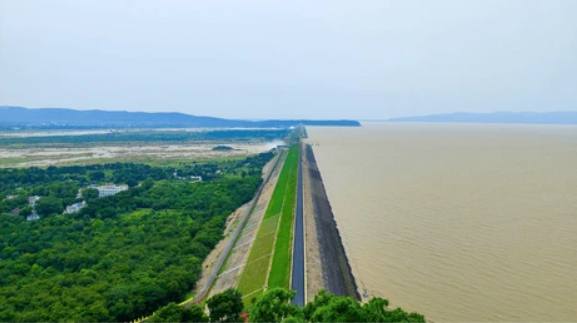

It was 4:45 AM when my alarm buzzed in the silence of Sambalpur. Most of the city still clung to dreams, but my soul stirred with the promise of something grand—a sunrise at the legendary Hirakud Dam.
With my helmet secured and engine humming, I took off. The early morning wind kissed my face as the streets blurred beneath my wheels. There's a unique magic in riding while the rest of the world sleeps. Every pothole feels like a portal. Every turn, a question mark. What waits beyond?
“We build too many walls and not enough bridges.” — Isaac Newton
And then, there it was—Hirakud. Sprawled like a sleeping dragon, the dam rose slowly from the mist. Spanning over 25 kilometers, it wasn't just a barrier. It was a symbol of India’s post-independence vision, a dream of taming the Mahanadi to protect, to prosper, to provide.
Parked near the right dyke, I walked toward the viewing point. The sky began to blush. Gold spilled across the reservoir, waves flickering like they were whispering back at the sun. For a moment, the dam wasn’t a structure. It was poetry. Concrete and earth woven into nature’s rhythm.
More Than Just Engineering
Did you know Hirakud is the longest earthen dam in the world? Or that it submerged over 360 villages to give birth to this hydrological marvel? Riding here isn’t just about the view—it’s about listening. To the past. To the progress. To the pulse of Odisha’s heart.
I met an old man fishing nearby. He smiled and said, “The dam feeds us now. But it took our ancestors to make it happen.” That hit me. Suddenly, the dam wasn’t just an Instagram moment. It was heritage, sacrifice, resilience.
Rider Tips
- Best Time: 5–7 AM or post-5 PM for golden hour photos.
- Route: Take the NH to Burla, then turn toward the main Hirakud entrance. It’s a smooth 16 km ride.
- Carry: Water, sunglasses, and if possible, a drone (stunning aerial shots!)